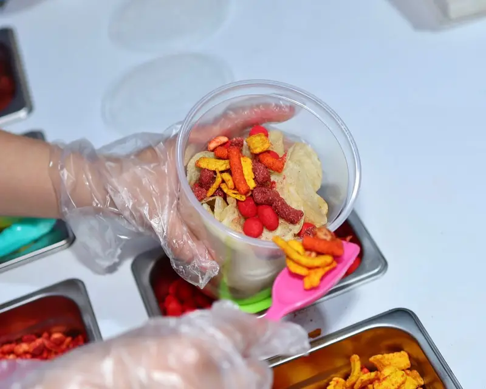
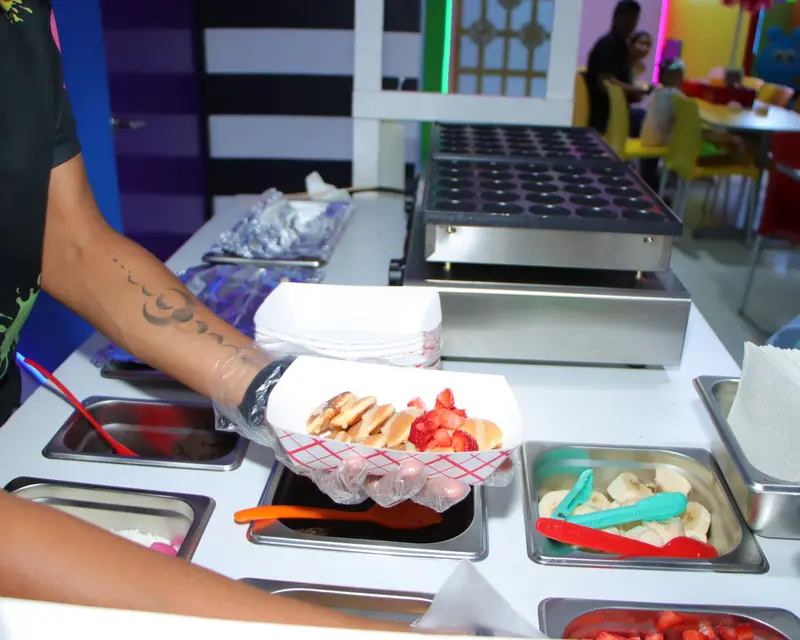
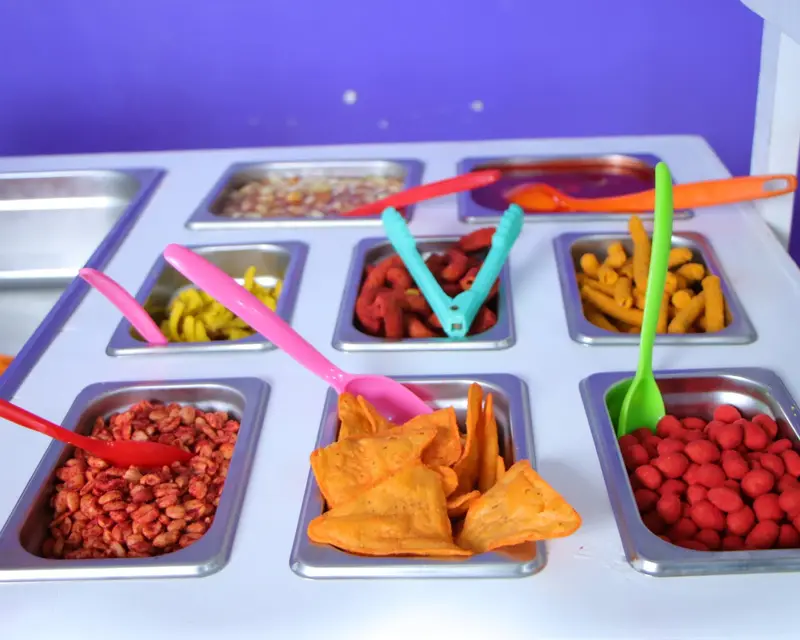
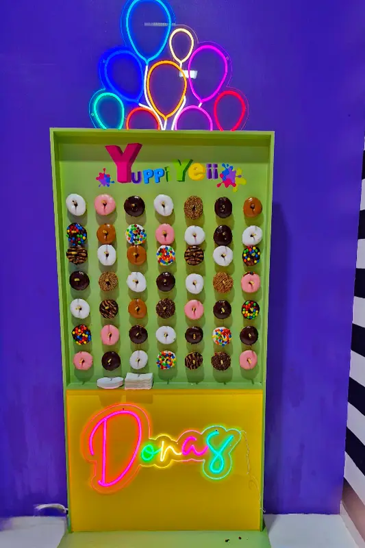
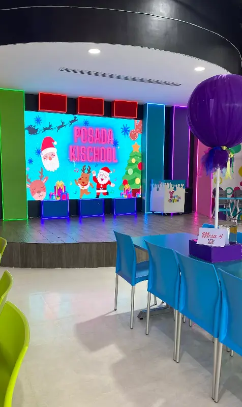

Fiesta, juegos y sabor en Valle de las Alamedas
Salón temático, zona de juegos, pared de donas y animación en vivo para que solo te preocupes por soplar las velitas. Calificado con 4.8★ en Google por 95 reseñas.
Cada rincón está pensado para que los niños corran, jueguen y celebren sin parar.
Salón principal
Mesas montadas y tematizadas para cada cumpleaños, escenario con pantalla LED interactiva para juegos y el show en vivo, y sonido profesional listo para el "Happy Birthday".
Área de juegos
Toboganes de colores y brincolines, con juegos para todas las edades. Como dice un cliente en Google: "desde niños de 2 años a niños más grandes".
Área diferenciada
Un rincón de piezas LEGO y una Baby Zone con colchonetas para los más chiquitos, aparte de donde corren los grandes.
En Yuppi Yeii armamos fiestas para niños de 2 años hasta los más grandes: toboganes, pista de patinaje, videojuegos, hockey de mesa y una zona aparte con LEGO y colchonetas para los bebés. Todo bajo el mismo techo, en Valle de las Alamedas.
Como escribió un cliente en Google: "muy completo, muchas felicidades". Decoración montada, mesa de dulces enchilados, pared de donas y animador con mascota en vivo para que tú solo traigas el pastel.
Desde
Desde
Desde
Toca o haz clic para ver más →

Botanas al momento
Mini pancakes
Dulces enchilados
Pared de donas
Pantalla LEDDecoración, animación, videojuegos y botanas, todo bajo el mismo techo.
Photo booth y ambientación completa del personaje que elija tu peque, lista antes de que llegues.
Muro de donas con letrero de neón para las fotos.
Videojuegos dentro del salón para los que ya no quieren estar sentados.
Pista de patinaje de ruedas y hockey de mesa.
Animador y mascota en vivo, bailando mesa por mesa.
Lugar para todos los coches de tus invitados.
Botanas preparadas, mini pancakes y charolas de dulces enchilados.
Estamos en Valle de las Alamedas, San Nicolás de los Garza, cerca de Plaza Sentier, H-E-B Sendero y Home Depot Sendero, con estacionamiento amplio.
Cuéntanos qué fiesta imaginas para tu peque: el tema, la fecha y más o menos cuántos invitados. Te mandamos una cotización clara el mismo día, sin compromiso.
Se guarda como imagen, lista para el grupo de la escuela.
Escribe el nombre y elige un color, la invitación se arma sola.